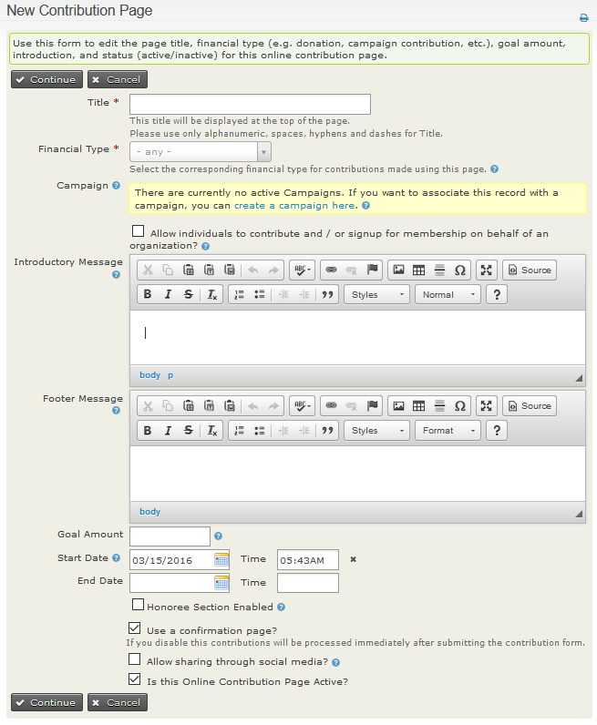
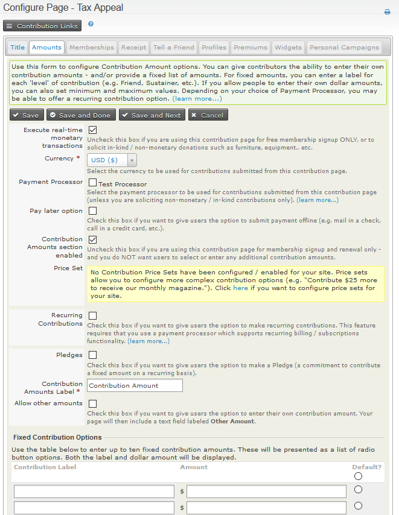
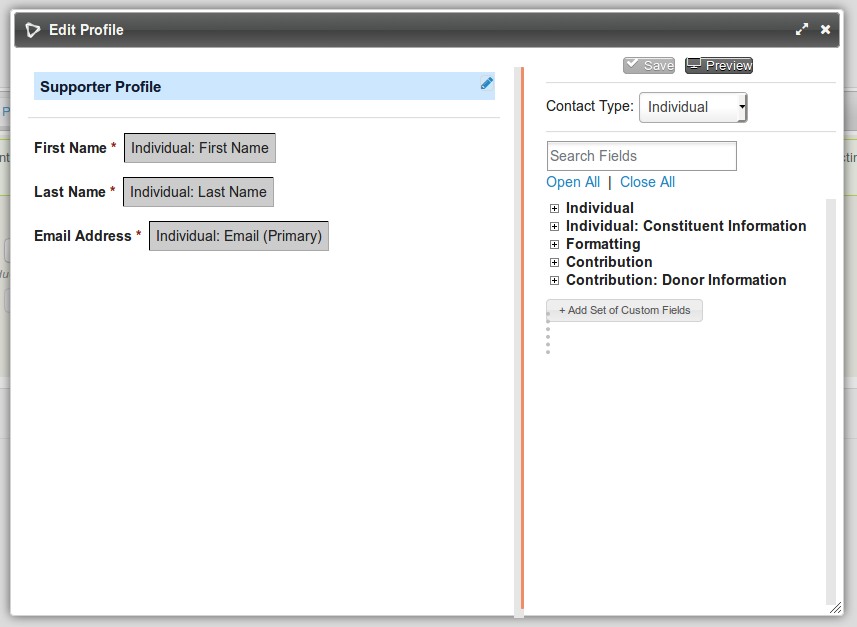
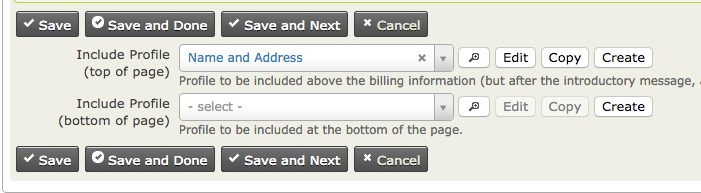

Creating contribution pages¶
Alternative: use Contribution Forms
Contribution Forms provide a new way to take Contributions from visitors to your site. Contribution Forms are built with FormBuilder, which allows more flexibility to site admins to tailor forms to your specific needs. They also provide a number of more modern clientside payment integrations. At time of writing, only a few Payment Processors are supported.
This page describes setting up online Contribution Pages where visitors to your website can make Contributions to your organisation. CiviContribute includes optional fields and features such as recurring Contributions, Pledges and Personal Campaign Pages. The first two procedures show simpler ways to get started.
The simplest Contribution Page (receipt sent only from payment processor)¶
- Make sure you have a payment processor configured.
- Go to Contributions > New Contribution Page.
- Enter the Title for your website page.
- Select the appropriate Financial Type.
- Click on Continue.
- On the next page leave everything as is except for ticking the Allow Other Amounts checkbox and setting minimum and/or maximum amounts if you want to.
- Click on Save and Done.
- Follow the steps for your CMS to display this page on your website.
A very simple Contribution Page including receipt from your organisation¶
- Make sure you have a payment processor configured.
- Go to to Contributions > New Contribution Page.
- Enter the Title for your website page.
- Select the appropriate Financial Type.
- Click on Continue.
- On the next page leave everything as is except for ticking the Allow Other Amounts checkbox and setting minimum and/or maximum amounts if you want to.
- Click on Save.
- Select the Receipt tab.
- Enter the Title for your Thank-you page.
- Tick Email Receipt to Contributor.
- Enter the FROM email address in Receipt From Email.
- Click on Save and Done.
- Follow the steps for your CMS to display this page on your website.
Setting up a Contribution Page: full details¶
Navigate to Contribution > New Contribution Page. (Contribution > Manage Contribution Pages > Add Contribution Page takes you to the same screen.)

- The Page Title and Financial Type are the only compulsory fields. CiviCRM comes with four standard Financial Types, but you can create more to meet your organisation's accounting needs.
- Link this Contribution Page to a Campaign. (optional)
- Compose your Introductory Message. (optional)
- Compose your Footer Message. (optional)
- Set a Goal Amount. (optional)
- This Contribution Page has to be manually enabled or disabled, but you can set a Start Date and End Date that will apply for a Contribution Widget and Personal Campaign Pages. (optional)
- Choose whether or not to accept Honoree soft crediting.
- Choose to use a confirmation page where users can check all details are correct or to process the payment as soon as the Contribution form is submitted.
- Choose whether or not to display social media links on online pages and in the automatically emailed receipt (if being sent).
- Decide whether or not to make the Contribution Page active now.
- Click Continue. (This is when you new Contribution Page is first saved.) You will be able to go back and modify all aspects of this page at any time by visiting the Title (and Settings) tab.
You will now be on the (Contribution) Amounts tab. All the other feature tabs for Contribution Pages will now be visible at the top of the page. The following sections cover them one by one.
Amounts tab¶

- The Execute real-time monetary transactions box is checked by default. You would uncheck this box if you are using this Contribution Page for free membership signup or to solicit in-kind (non-monetary) donations, or when you want all users to submit their payments offline.
- Select the Currency.
- Select one or more previously configured Payment Processors for this page. Some organizations find it is a good idea to offer a choice of processors. You can do this by setting up multiple processors and checking the corresponding boxes on this form.
- Check the Pay Later box if you want to give users the option to submit payment offline (e.g. mail in a cheque, call in a credit card, deposit directly into your bank account etc.). If you allow pay later Contributions you will need to decide on a checkbox label to display to your users and the instructions for submitting these delayed payments.
- If you uncheck the Contribution Amounts Section Enabled the remaining fields on this page will vanish. You will only be able accept fixed-amount membership fees, or, if you configure a membership Price Set, fixed-amount memberships fees and other Contributions as specified in the Price Set all charged in a single transaction.
- Select a pre-defined Price Set (for more complex payment options), OR enter up to 10 fixed Contribution amounts in the table at the bottom of the page.)
- You can check Recurring Contributions if your payment processor and its integration with CiviCRM support recurring billing and you want to allow this feature. (There are restrictions on recurring payments when membership fees are being paid.) If you check Recurring Contributions further settings become visible.
- You can either set one frequency (e.g. a user can donate their chosen amount monthly) or allow for more user flexibility, where they can decide their own interval and/or number of installations (e.g. a user can donate their chosen amount once every three months for 12 installments).
- Check the Pledges box to give users the opportunity to pledge future payments.
- Decide on the label for the Contribution amount area on your page.
- Check Allow other amounts to give users the option to pay any amount they choose. You can set a minimum and a maximum amount for "Other Amount" Contributions if you want to.
- Click Save and Done.
Memberships tab¶
This is covered in detail in Memberships.
Profile tab¶
If you want to collect information such as age, interests and skills that goes beyond the essential fields required to make a Contribution, you can include existing CiviCRM Profiles at the beginning or end of a Contribution Page. You can also create new Profiles.
Each Profile appears on the Contribution Page as a fieldset with a legend header. The legend will be the Profile Public Title if that is set, or else the Profile Name. A good practice is to give Profiles names that are useful for identifying Profiles in a list and to give Profiles Public Titles that make a good header for the form section.
Profiles used in a Contribution Page can ONLY contain fields which belong to:
- Contact records
- Contribution records
Profiles which include fields associated with any other record types will not be available for this purpose.
Contribution Pages will always include a required email address field. If you do not include any Profile with an email address field, an email address field will be added near the top of the form.
To add a Profile to a Contribution form:
- Navigate to Manage Contribution Pages then for the page you wish to configure, click on Configure > Include Profiles.
-
Select a CiviCRM Profile from the relevant drop down menu to be included at the top and/or bottom of the Contribution Page. You can then preview your selection(s), edit an existing Profile, copy an existing Profile or create a new Profile. When you edit or create a new Profile you will use the Profile drag and drop interface pictured here. You may click the pencil icon to edit the Profile name, public Title, and pre- and post-form help text.

Warning
If you modify an existing Profile whilst configuring your Contribution Page, the changes you make will apply everywhere that Profile is being used. So unless an existing Profile exactly matches your requirements you should copy the Profile, then rename and edit the copy as required.
-
Click Save or Save and Done or Save and Next.
Multiple address blocks
Most payment processors add a set of address fields along with the payment details. These fields will be used to save a billing address.
If you include a Profile with address fields at the top of the page, CiviCRM automatically generates a checkbox on the Contribution form which allows the user to indicate that their Billing Address is the same as the address entered in the Profile. When set up correctly, the checkbox is checked by default and reveals billing name and address fields when unchecked.
For a checkbox to be generated and hide/reveal the billing address fields, the Profile:
- Must be included at the top (not the bottom) of the page (there is a drop down menu for each option on the Include Profiles configuration page)
- Must have the same fields (First Name, Last Name, Street Address, City, State, Postal Code and Country) as the Billing Address Profile and these fields must be marked as required. When the correct fields are included but not marked required the checkbox will still be visible but the javascript won’t work so the billing name and address always be visible.

A number of the Advanced Settings for Profiles take effect when a Profile is included in a Contribution Page. You cannot edit these from the editing interface within the Contribution Page settings; you must go to the main Profile settings form to make changes.
- Adding contacts to a group. Note that many donors do not wish to join a mailing list merely because they have made a donation.
- CMS User account registration options. A donor can be presented with the option or requirement to log in or create a user account while making a Contribution.
- Including ReCAPTCHA. A CAPTCHA can be added to make it more difficult for bots and donors to submit the form.
Other advanced settings, such as what to do upon duplicate match, are ignored on Contribution Pages.
For more information read Profiles.
Automatic contribution recording¶
Regardless of how donors get to your Contribution Page, CiviCRM automatically records their donations, freeing your staff from doing manual data entry. If the donors already exist in the database, CiviCRM adds the Contribution to their existing record. If they don't exist, CiviCRM creates a new record for them.
In situations where people have multiple email addresses, or where more than one person shares an email address, it can be possible for Contributions to be credited to the wrong contact. To mitigate the chance of this happening, you can adjust CiviCRM's default duplicate matching rules. For instructions on how to do this, read Deduping and Merging.
Receipt tab: thank-you and receipting¶
Once you have created your Contribution Page, you can customise the Thank-you and Receipt emails that are sent to contributors.
- Navigate to Administer > CiviContribute > Manage Contribution Pages.
- Use the Configure link at the right-hand side of a Contribution Page in the list to access and edit the page.
- Click on Thank-you and Receipting and enter the information that you wish to appear in the thank-you email. Donors usually expect a receipt as soon as their transaction is complete, so it is recommended to enable the automatic Email Receipt.
- Click Save and Done.
Email alerts for Contributions¶
Add one or more staff emails to the CC Receipt To or BCC Receipt To fields if you want real-time updates on who has processed a Contribution. Enter one or more email addresses separated by comma.
Warning
Make sure that the email addresses entered into the CC Receipt To and BCC Receipt To fields are correct and do not bounce or return an error email. Any return emails received by CiviCRM will be interpreted as a bounce for the CiviCRM Contact that the receipt was sent too and not as a bounce for the CC/BCC email address. This can have the adverse impact that the CiviCRM Contact's email address is put On Hold and cause future emails to not be sent. For more details see this issue report.
Publicizing your Contribution Page¶
Now that you've created your Contribution Page, it's time to bring people to the page so they can contribute. You will probably want to display a link to the page prominently on your website through a donate button or menu item. Here are some additional tips for promoting a Contribution Page in different CiviCRM configurations:
Menu item in Joomla!¶
The most direct way to expose your Contribution Page or membership signup/renewal page on the front of your web site is by creating a menu item.
- Navigate to a menu and create a new CiviCRM item.
- From the list of menu options, choose Contributions.
- In the basic parameters section, select the contribution page you would like exposed from the dropdown menu.
- Save the menu item and view the website to confirm the page's functionality.
Menu item in Drupal¶
From the Contribution Page listing, select Live Page to view the finished page. You can then copy the URL and include it in a content page or assign it to a menu item.
Page or Post in WordPress¶
You can easily embed your Contribution Page in a Post or Page on your WordPress front-end site.
- Login to the administration dashboard of your WordPress site.
- Click on Pages or Posts > Add New
- Click on the CiviCRM icon next to Upload / Insert
- Select Contribution Page as your Frontend Element
- Select the desired Contribution Page
- Save the Page or Post, and your Contribution Page will automatically be embedded within your site's theme on that Page.
"Pretty" URLs¶
CiviContribute Contribution Pages have "ugly" URLs—in other words, they are difficult to remember. An example is:
www.myorganization.org/civicrm/contribute/transact?reset=1&id=1
On the other hand, "pretty" URLs are much easier to remember and use in your organization's outreach, for example:
www.myorganization.org/donate
A pretty URL is simply a URL redirect (automatically taking people from one page of your web site to another). Drupal provides a helpful module called Path Redirect (http://drupal.org/project/path_redirect) that lets you create URL redirects from the user interface without complicated web server configuration. Joomla! users also have a work-around if Search Engine Friendly URLs are enabled in Global Settings. You can then create a menu link to the Contribution page and define the "pretty" URL using the alias field.
Personalised Email¶
Emailing your current membership is the other critical way to publicize the Campaign. The CiviMail component of CiviCRM allows you to send targeted emails to any group of contacts in your database. Within a CiviMail message you can include links to the Contribution form and use CiviMail's tracking capability to see how many people click on that link.
One time-tested way to increase Contributions is to use checksum tokens to send each constituent a personalized email with a link to the Contribution form that has all of their contact information already filled in. This saves them the hassle of filling it out and raises the chances that they donate.